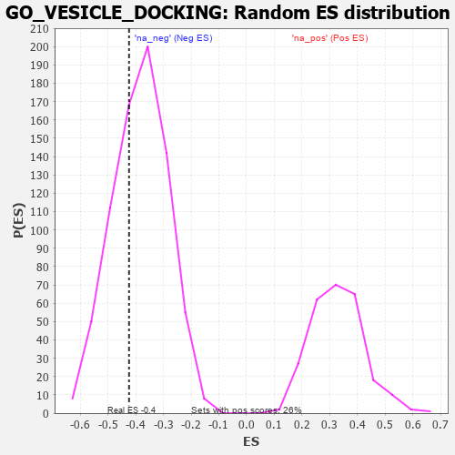

| | | Dataset | 7d |
| Phenotype | NoPhenotypeAvailable |
| Upregulated in class | na_neg |
| GeneSet | GO_VESICLE_DOCKING |
| Enrichment Score (ES) | -0.42380846 |
| Normalized Enrichment Score (NES) | -1.106269 |
| Nominal p-value | 0.3270525 |
| FDR q-value | 0.73704505 |
| FWER p-Value | 1.0 |
Table: GSEA Results Summary
 Fig 1: Enrichment plot: GO_VESICLE_DOCKING
Fig 1: Enrichment plot: GO_VESICLE_DOCKING
Profile of the Running ES Score & Positions of GeneSet Members on the Rank Ordered List
| PROBE | GENE SYMBOL | GENE_TITLE | RANK IN GENE LIST | RANK METRIC SCORE | RUNNING ES | CORE ENRICHMENT | | 1 | NSF | | | 243 | 0.947 | 0.0583 | No |
| 2 | STX17 | | | 940 | 0.497 | 0.0174 | No |
| 3 | STX16 | | | 2116 | 0.289 | -0.1034 | No |
| 4 | YKT6 | | | 2571 | 0.217 | -0.1402 | No |
| 5 | SCFD1 | | | 2783 | 0.185 | -0.1494 | No |
| 6 | RAB10 | | | 2952 | 0.157 | -0.1557 | No |
| 7 | STX6 | | | 3087 | 0.138 | -0.1596 | No |
| 8 | RAB8A | | | 3319 | 0.102 | -0.1791 | No |
| 9 | STX7 | | | 4147 | -0.033 | -0.2801 | No |
| 10 | EXOC4 | | | 4182 | -0.039 | -0.2808 | No |
| 11 | VPS11 | | | 4202 | -0.041 | -0.2793 | No |
| 12 | STX5 | | | 4400 | -0.077 | -0.2969 | No |
| 13 | STX2 | | | 4562 | -0.108 | -0.3070 | No |
| 14 | USO1 | | | 4855 | -0.168 | -0.3279 | No |
| 15 | VPS45 | | | 5618 | -0.350 | -0.3910 | Yes |
| 16 | RAB13 | | | 5870 | -0.425 | -0.3827 | Yes |
| 17 | VAMP3 | | | 6043 | -0.487 | -0.3586 | Yes |
| 18 | RALB | | | 6399 | -0.617 | -0.3454 | Yes |
| 19 | CLN3 | | | 6580 | -0.699 | -0.3024 | Yes |
| 20 | VPS18 | | | 6659 | -0.743 | -0.2425 | Yes |
| 21 | CEP83 | | | 7020 | -0.950 | -0.1986 | Yes |
| 22 | CFTR | | | 7143 | -1.030 | -0.1174 | Yes |
| 23 | SYT1 | | | 7148 | -1.033 | -0.0211 | Yes |
| 24 | KCNB1 | | | 7444 | -1.327 | 0.0663 | Yes |
Table: GSEA details [plain text format]

Fig 2: GO_VESICLE_DOCKING: Random ES distribution
Gene set null distribution of ES for GO_VESICLE_DOCKING